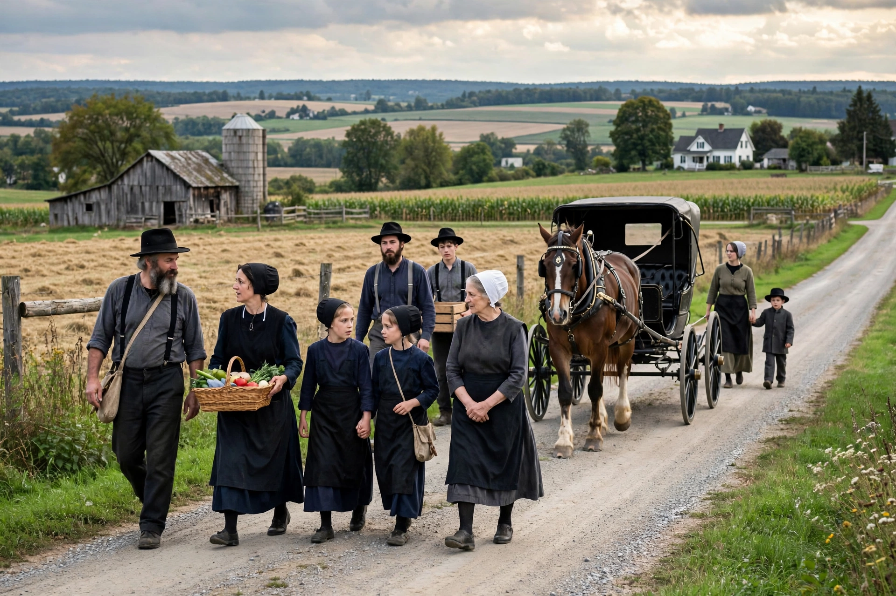

Mennonites are a group of Anabaptist Christian communities tracing their roots to the Radical Reformation in the 16th century, named after Menno Simons (1496–1561).

| Mennonites | |
|---|---|
| Total population | ~2.1 million (2023) |
| Founder | Menno Simons |
| Regions | Canada, USA, Mexico, Paraguay, Ethiopia, India |
Core convictions include believer's baptism, pacifism and nonresistance, separation from the world in varying degrees, community, and discipleship. Groups range from Old Order, who limit technology, to progressive urban Mennonites.
Originating in Zurich, Friesland and the Low Countries amid persecution, Mennonites migrated to Prussia, Russia, North America and Latin America. The Amish split in 1693 under Jakob Ammann.
Known for quilting, farming, mutual aid, four-part hymn singing, and service through Mennonite Central Committee.